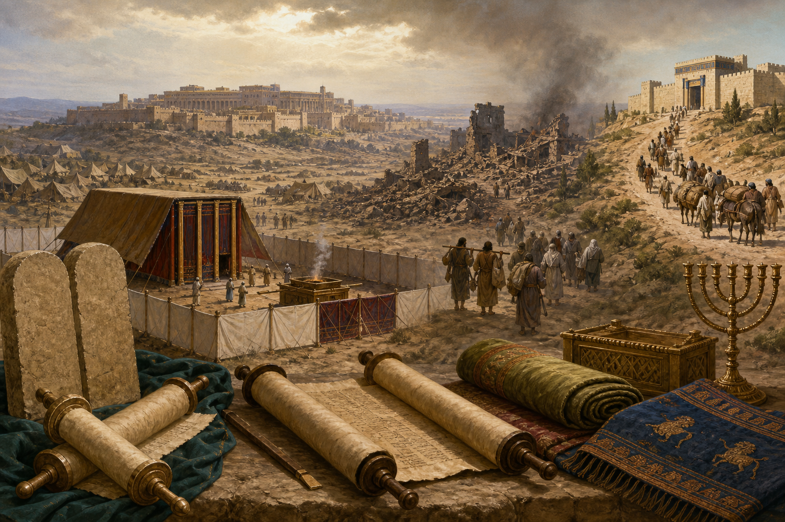

本质核心
圣经的中心不是人的宗教经验，而是神主动说话、立约、审判、施恩，并在耶稣基督里完成救赎。创造显明神的主权，堕落暴露人的罪与无能，亚伯拉罕之约展开恩典之约，摩西之约显明圣洁与罪责，大卫之约聚焦君王弥赛亚，新约在基督的血里成全一切应许。
所以，每一卷书都应放在“创造、堕落、应许、预表、成全、新造”的大结构里读。旧约不是单独的犹太民族史，新约也不是脱离旧约的伦理读本；二者共同见证基督，基督是圣经的中心、解释的钥匙、救赎的实质。
先从整本圣经的圣约救赎框架看见中心，再进入每一卷书的真实处境、写作目的、结构内容、基督成全与今日应用。
整本圣经角度
圣经的中心不是人的宗教经验，而是神主动说话、立约、审判、施恩，并在耶稣基督里完成救赎。创造显明神的主权，堕落暴露人的罪与无能，亚伯拉罕之约展开恩典之约，摩西之约显明圣洁与罪责，大卫之约聚焦君王弥赛亚，新约在基督的血里成全一切应许。
所以，每一卷书都应放在“创造、堕落、应许、预表、成全、新造”的大结构里读。旧约不是单独的犹太民族史，新约也不是脱离旧约的伦理读本；二者共同见证基督，基督是圣经的中心、解释的钥匙、救赎的实质。
欧陆改革宗传统强调：唯独圣经为最高规范；神的主权与恩典先行；人因罪全然败坏，不能自救；称义唯独因信，唯独基督，唯独恩典；圣约是理解救赎历史的骨架；律法与福音既须分辨又须合一于基督。

救赎历史主线
逐卷解读
每卷书按同一逻辑阅读：它在整本圣经中的位置是什么？原始处境为何？为什么写？写了什么？如何指向基督？今天怎样应用？